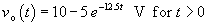
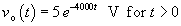
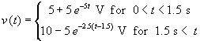
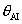
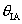
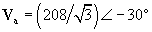
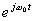

Page 18, voltage reference direction should be + on the right in part B:
Page 28, caption for Figure 2.3-1: "current" instead of "cuurent"
Page 41, line 2: "voltage or current" instead of "voltage or circuit"
Page 41, Figure 2.8-1 b: the short circuit is drawn as an open circuit.
Page 42, line 11: "Each dependent source ..." instead of "Each dependent sources..."
Page 164, Table 5.5-1: method 2, part c, one should insert the phrase "Zero all independent sources, then" between the "(c)" and "Connect a 1-A source. . ." The edited phrase will read:
"Zero all independent sources, then connect a 1-A source from terminal b to terminal a. Determine Vab. Then Rt = Vab/1."
Page 340, Problem P8.3-5: The answer should be .
Page 340, Problem P8.3-6: The answer should be .
Page 341, Problem P.8.4-1: The answer should be 
Page 546, line 4: The angle is  instead of .
Page 554, Problem 12.4.1 Missing parenthesis: 
Page 687, Equation 15.5-2: Partial t in exponent: 
Page 757, Problem 16.5-7: Hb(s) = V2(s) / V1(s) and Hc(s) = V2(s) / Vs(s) instead of Hb(s) = V1(s) / V2(s) and Hc(s) = V1(s) / Vs(s).